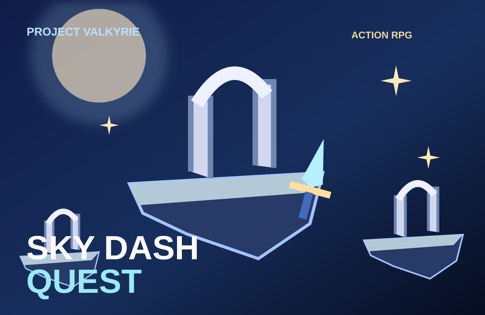
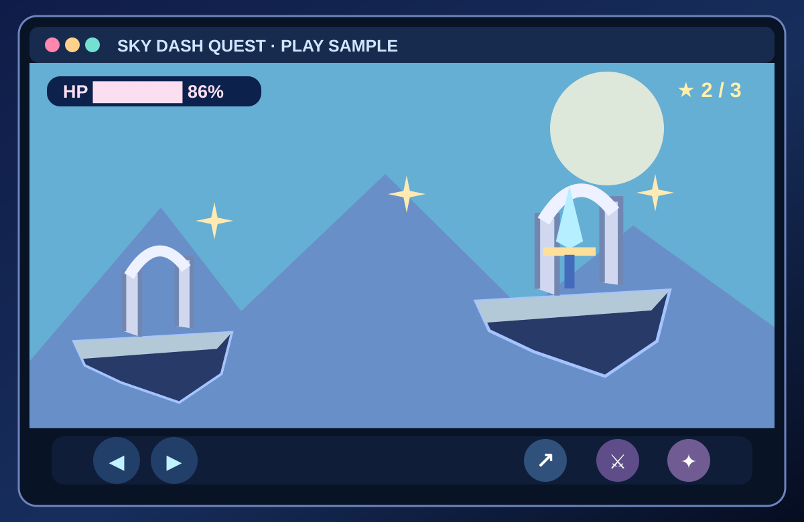
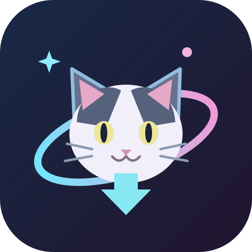
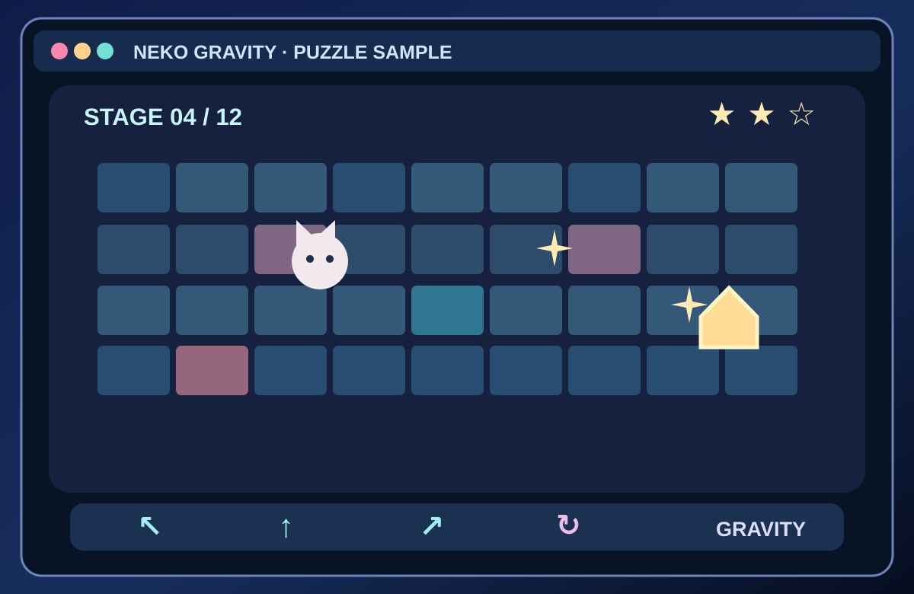
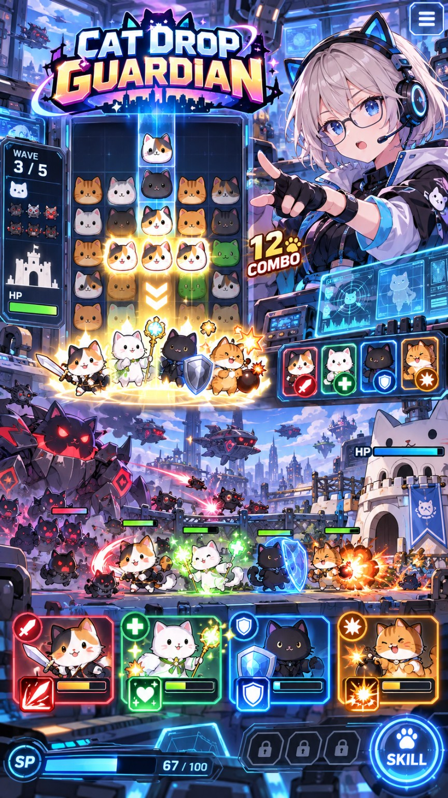
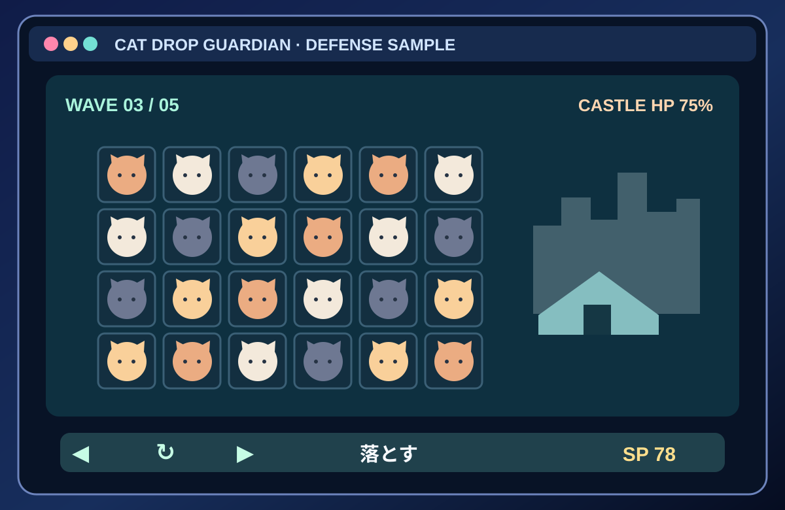
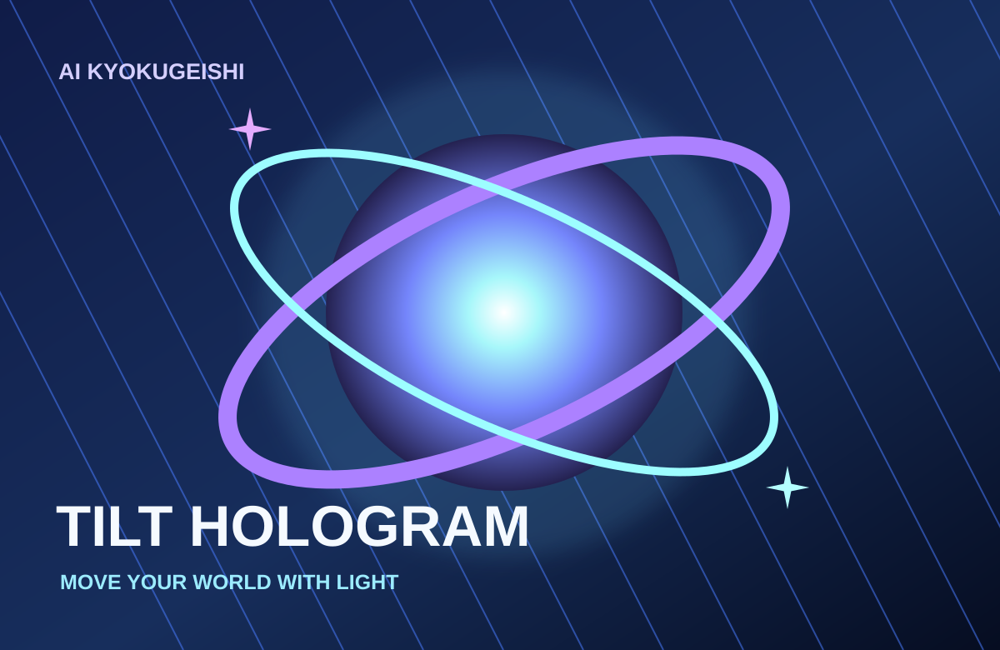
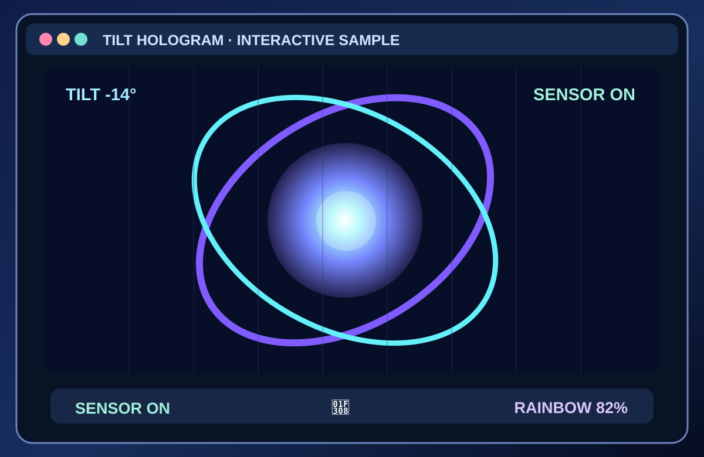
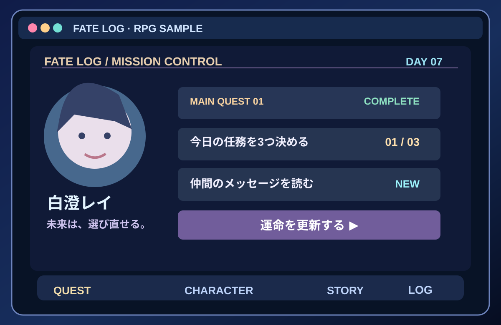

01 / 05ACTION · SKY RUINS


SKY DASH QUEST
天空遺跡を駆ける横スクロールアクション。剣・2段ジャンプ・ダッシュで星を集めよう。
AI曲芸師の5つの世界へ。作品イメージを見て、ゲーム画面を確かめて、スマホで遊ぼう。
天空ステージを起動 5作品のサムネイル一覧を見る ↓ 新作 NEKO GRAVITY で遊ぶ ↓ 新作 CAT DROP GUARDIAN で遊ぶ ↓ AI曲芸師 Tilt Hologram v9.0 を見る ↓ 🕰 FATE LOG 〜運命改変録〜 を見る ↓この版の最終更新日：
FIVE WORLDS · ONE PLAYGROUND
気になるサムネイルから、その世界へ。
左は作品イメージ、右はゲーム画面の再現イメージです。実際の画面・操作は「ゲーム画面を見る」から確認できます。


天空遺跡を駆ける横スクロールアクション。剣・2段ジャンプ・ダッシュで星を集めよう。


重力をくるりと切り替え、3つの星を集めながら猫をおうちへ導く12ステージ。


3匹そろえると猫の部隊が出撃！ 落ちものパズルと街の防衛を組み合わせたゲーム。


スマホの傾きや指の動きで、虹色の光とホログラムが変化する体験作品。


現実のタスクを任務に変える時間改変ADV。キャラクターと一緒に未来を選び直す。
ACTION · SKY RUINS
空に浮かぶ遺跡を駆け抜けろ。
剣とスキル、ジャンプを使い、3つの星を集めよう。
紹介ページ作成日・掲載日：
NEW · GRAVITY PUZZLE
一覧掲載日：
重力、カワイクひっくり返す。
スマホを傾けて、3つの星と猫のおうちへ。
NEW · PUZZLE × DEFENSE
一覧掲載日：
そろえて、出撃。猫の街を守りぬけ。
3匹そろった猫が部隊になって戦う、落ちもの防衛パズル。
INTERACTIVE · TILT HOLOGRAM
スマホを傾けると光と虹が動く、ホログラム体験。
センサーが使えない場合も、指でなぞって楽しめます。
一覧掲載日：
NEW · REAL-LIFE TASK RPG × TIME REWRITE
一覧への掲載日：
まず一つ。未来はそこから変わる。
現実のタスクを「任務」に変える時間改変ADV × タスクRPG。
APKの実機動作確認・公開ダウンロードURLは準備中です。
CHARACTER ART ARCHIVE · 2026.10.15
主人公・仲間・ライバル・マスコット・ボスなど、10章で広がるFATE LOGの世界観。画像をタップすると、専用ページの拡大ギャラリーへ移動します。
※今回の画像はAIによる追加コンセプト案です。初期設定の4人や既存カード図鑑10枚を置き換えるものではありません。
01 · 主要キャラクター総覧
 02 · 主人公チーム
02 · 主人公チーム
 03 · 仲間たち
03 · 仲間たち
 04 · メンター＆ガーディアン
04 · メンター＆ガーディアン
 05 · 時間管理局
05 · 時間管理局
 06 · 街と日常の人々
06 · 街と日常の人々
 07 · ライバル
07 · ライバル
 08 · ヴィラン
08 · ヴィラン
 09 · マスコット＆召喚獣
09 · マスコット＆召喚獣
 10 · 伝説級ボス
10 · 伝説級ボス